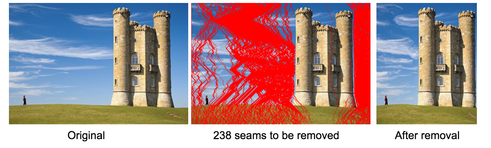
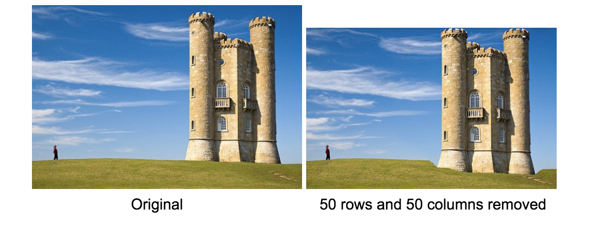
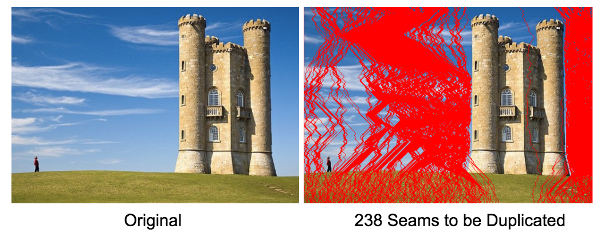
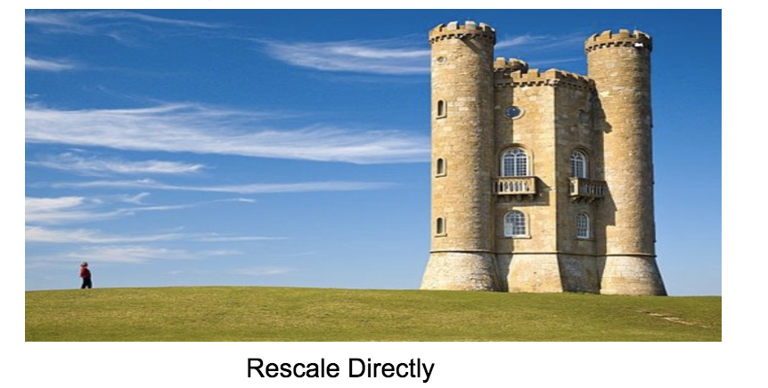
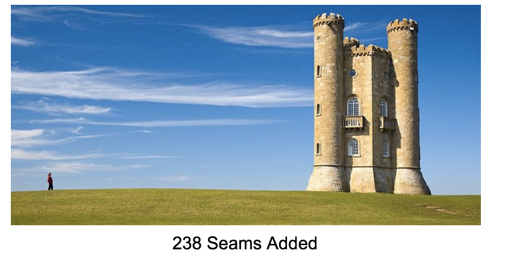
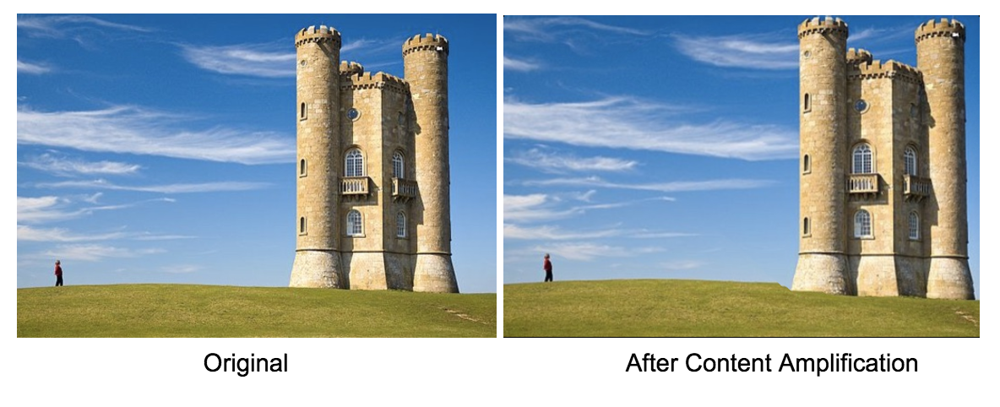
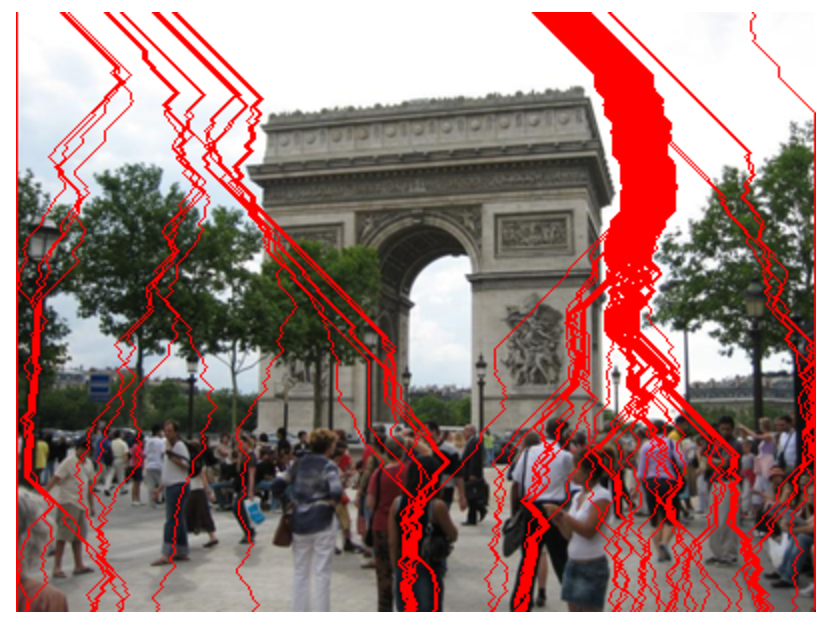

Team Members:
Chang Guo
Haiyun Jin
Zhicheng Gu
We stick to our proposed timeline strictly except for the comparison with other methods part. We wrote code to calculate the edge-based energy map, using dynamic programming to find the optimal seam and removed it. We also wrote extra code to show the removed seams on the original image to give better idea how the method works. Then, the two directional removal of seams are implemented again with dynamic programming. A removal order table is generated by trying out all possible orders using extensive time. After that, the table is used to determine the optimal removal order in constant time. Currently, two applications are implemented, enlarging and content amplification. See below for results.
We write the codes in Python. In some cases such as calculating the optimal seam carving, pure Python code is slow and cause too much time, so we rewrite these calculation part into Cython code and speed up the algorithm by about 10 times. Besides, we progressively developed the project home page (http://52.24.241.123/static/index.html). We published the proposal, mid-term report and an interesting demo which allows users to upload their own images and reduce the width (currently, only reducing width are demoed, 2D removal takes too much time for a web demo).
Implementation of dynamic programming code to find optimal seam for one direction.
Given an energy function e, we can define the cost of a seam as the sum of energy value of all the points on the seam. We use dynamic programming method to find the optimal seam. The first step is traverse the image from the second row to the last row. For every points on every row, set the cumulative energy value equals to the current energy value plus the minimum cumulative energy value in the connected points in the last row.
The result is shown in the following figures:
Resize along both x and y direction with optimal order. To find the optimal order of removal, a dynamic programming table is built to store the order of removal for all possible size. Upon the request of a given size, which m columns and n row to be removed, the order of removal is determined from the dp table and the total computing time is O(m+n).
Results:
Applications
Enlarging
Find the first k seams for removal, then duplicate them in order. Compared with rescale directly, seam carving achieves better results.
  Content Amplification
Apply standard scaling to image, then do seam carving on scaled image to carve back to its’ original size.
As shown in this image, the calculated seam seem to be not the optimal seam since they are mostly straight and crossing edges. One possible reason is the energy function is not good enough to punish crossing-edges seams.
